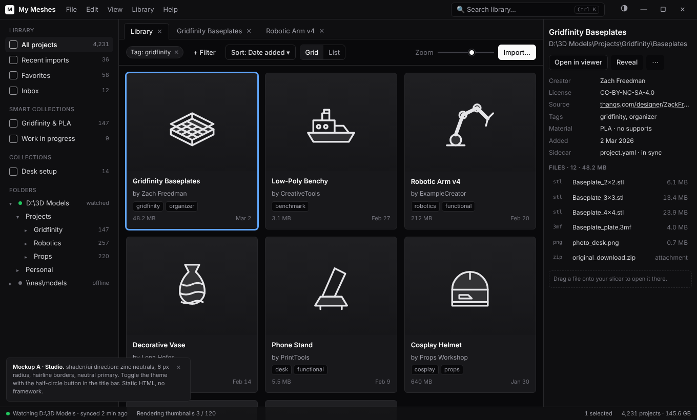

A
Studio
The shadcn/ui look: zinc neutrals, 6 px radii, hairline borders, a neutral primary. Familiar, calm, and the closest to what the archived version already did.
Inter · 6 px
Best fit: shadcn/ui (React), shadcn-svelte, shadcn-vue